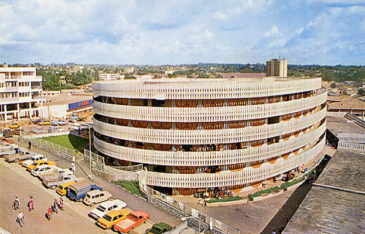

Dag 1
Hier is een voorgesteld reisschema voor drie vrije dagen in YAOUNDE:
Yaoundé ontdekken Yaoundé is de politieke hoofdstad van Kameroen en staat vol met interessante bezienswaardigheden om te bezoeken.
1. Bezoek aan het presidentiële paleis: Begin uw dag met een bezoek aan het presidentiële paleis, symbool van de politieke macht van het land.
kijken
2. Botanische Tuin: Wandel vervolgens door de prachtige Botanische Tuin, waar u een verscheidenheid aan exotische planten en bomen kunt ontdekken.
kijken
3. Centrale Markt: Dompel jezelf onder in de levendige sfeer van de Centrale Markt, waar je lokale souvenirs, vers fruit en handwerk kunt kopen.
kijken 